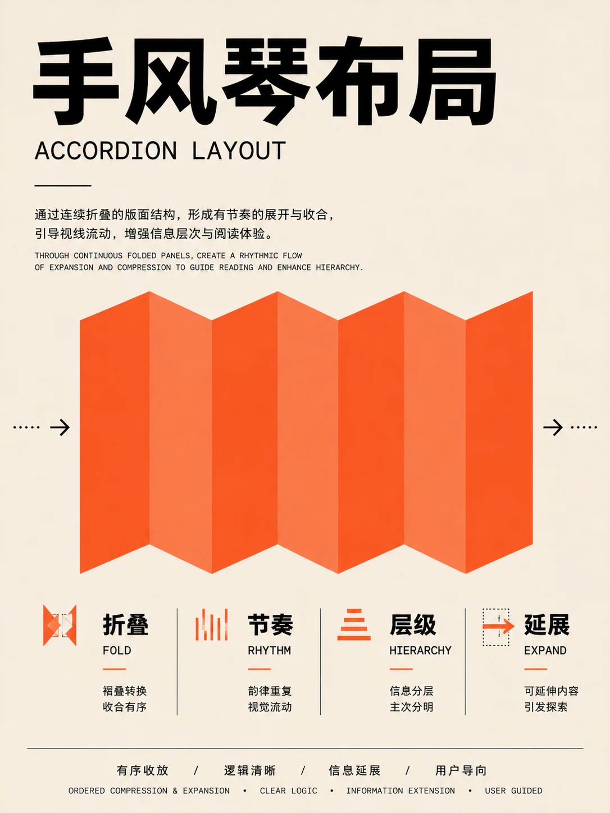

手风琴布局
ACCORDION LAYOUT
通过连续折叠的版面结构，形成有节奏的展开与收合，引导视线流动，增强信息层次与阅读体验。
THROUGH CONTINUOUS FOLDED PANELS, CREATE A RHYTHMIC FLOW OF EXPANSION AND COMPRESSION TO GUIDE READING AND ENHANCE HIERARCHY.
褶叠转换 · 收合有序
展开 4/6 项韵律重复 · 视觉流动
无折标信息分层 · 主次分明
2 级套娃可延伸内容 · 引发探索
盲盒标题有序收放 / 逻辑清晰 / 信息延展 / 用户导向
ORDERED COMPRESSION & EXPANSION • CLEAR LOGIC • INFORMATION EXTENSION • USER GUIDED
折叠与代价
FOLDING & INTERACTION COST
原海报把核心价值说得很透：「通过连续折叠的版面结构，形成有节奏的展开与收合，引导视线流动，增强信息层次与阅读体验。」当一个长页面里装着彼此独立的 6 到 10 个主题，把次要正文收进折页里，确实能瞬间压低首屏高度，让读者先看见完整目录。
折叠从来不是免费午餐。尼尔森诺曼集团（NN/g）的 Hoa Loranger（2014）与 Huei-Hsin Wang（2023）反复提醒：手风琴缩短滚动距离的同时，一定会降低内容可见度并增加点击交互成本——把读者本来顺眼能读完的内容藏起来，反而会拖慢任务。
因此，判断该不该折叠只看一个问题：读者这次进页面，是只想挑出其中 1–2 项，还是要从头读到尾？切换下方三类真实任务，看看同一套折叠机制如何从「省时利器」变成「点击阻力」。
折标与气味
SIGNIFIERS & INFORMATION SCENT
正文折叠起来以后，留在表面替你说话的只有两样东西：标题里的「信息气味」，以及行尾那枚小小的折叠指示器（Signifier）。
2020 年 Page Laubheimer 与 Raluca Budiu 在 NN/g 发表《Accordion Icons: Which Signifiers Work Best?》，测试了四种常见做法对用户心理预期的影响：
- 向下/向上角标（▾ / ▴）最清晰：读者最稳定地预期「会在原地展开」，不会跳走。
- 加减号（+ / −）表现次佳：明确指向「展开更多细节」，在规格表与配置树里很可靠。
- 右箭头（→）语义摇摆：用户常把它理解成「进入新详情页」（如 267 列表—详情布局），容易犹豫。
- 没有任何图标最危险：多数用户直接把它当成页面导航链接或死标题，根本不点。
另一个高频失误是「裂开热区（Split Target）」：把标题文字做成跳转链接、只留行尾一个窄图标展开。切换热区模式开关亲手点点看，就知道它有多容易误触。
点击任意一行试试折叠手感，或切到「裂开热区」体验文字区误跳。
展开机制暗室
MOTION, SCROLL JUMP & NATIVE DETAILS
视觉折页只是表层，好用的手风琴离不开三件看不见的底层工程：恰当的展开节拍（经验值约 200–300ms）、收起上方长面板时的防跳屏锚定，以及符合 W3C WAI-ARIA APG 与现代原生 HTML <details name> 的可访问性契约。
01 · 为什么浏览器原生就能做互斥手风琴？
2024 年起主流浏览器全部支持为多个 <details> 指定相同 name 属性，展开一项时浏览器自动收起同组其余项，零脚本依赖。
02 · WAI-ARIA 要求哪些键盘与语义契约？
自定义组件须用标题内的原生 <button> 承载 aria-expanded 与 aria-controls，支持 Enter / Space 切换，并建议配 ↑ / ↓ / Home / End 跳转标题。
03 · 展开内容太长时，互斥和多开怎么选？
面板内容很长时，强互斥收起上方区段容易把刚点中的标题拉出视口；优先采用多开并行，或在收起时同步锚定当前标题位置。
从经折装到网页
FROM SUTRA FOLDS TO WEB UI
「手风琴」听起来像现代前端组件，它的物理基因其实延续了上千年：人类一直在解决同一个矛盾——如何把很长的连续信息折进有限的手掌与屏幕，又随时能原地摊开其中一段？点击下方五道折页，逐代展开它的来路。
什么时候别用
WHEN NOT TO USE ACCORDIONS
手风琴是页面框架家族里最容易被「滥用成垃圾抽屉」的布局。勾选下面符合你当前项目的条件，看看什么时候应该果断放弃 266，改用同小类的更优解法：
适合使用 266 手风琴布局
同小类替代路线（不重讲，点号直达在线互动页）
- 顺畅通读长文 → 255 单列页面 或配 258 侧边栏页面 固定目录。
- 平行同权大视图切换（3–5 组） → 265 标签页布局。
- 高频逐条浏览大块详情 → 267 列表—详情布局。
- 全站多级应用导航 → 263 导航抽屉布局 或 262 顶部导航布局。
小练习
SINGLE-VARIABLE DIAGNOSTIC
原海报与关键词
ORIGINAL POSTER & KEYWORDS

原海报视觉拆解
整张海报铺在温润的暖骨宣纸底色（#F6EDDD）上，顶部用厚实纯黑无衬线大字压出「手风琴布局」与宽距 ACCORDION LAYOUT。画面正中以 7 道明暗交替的朱橙（#F85822）与珊瑚橙（#FA7747）锯齿折面塑造出立体风箱，左右以虚点与细黑箭头（••••• → / → •••••）直接点明横向穿梭与折叠流动。
下部用三条细竖线等分出折叠、节奏、层级、延展四组要点与专属几何图标，最底沿再以通宽细线承接四组核心关键词——整张海报本身就是一次「展开即见骨架、收合不乱主次」的平面示范。
#F6EDDD暖骨宣纸#F85822朱橙暗折#FA7747珊瑚亮折#050504纯墨大标核实参考来源
- W3C WAI-ARIA APG — Accordion Pattern
- Hoa Loranger (2014) / Huei-Hsin Wang (2023) — NN/g Accordions on Desktop
- Page Laubheimer & Raluca Budiu (2020) — Accordion Icons Study
- John M. Carroll & Caroline Carrithers (1984) — Training Wheels (CACM)
- MDN Web Docs — HTML <details> & Exclusive Accordions